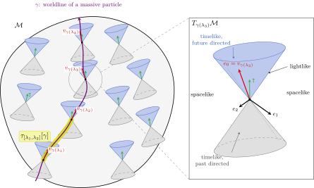

Chapter 10
General Relativity
“ Spacetime is a four-dimensional topological manifold with a smooth orientable atlas carrying a torsion-free connection compatible with a Lorentzian metric and a time orientation satisfying the Einstein equations. ”
Newton–Cartan theory (Chapter 9) already places gravity in the connection, but keeps an absolute time \(t\): the covector field \(dt\) classifies every tangent vector as future directed, spatial or past directed, and all observers agree on which events are simultaneous. Special relativity replaces \(dt\) by a Lorentzian metric and a time orientation. On \(\mathbb{R}^4\), in inertial coordinates, the time shown by a clock carried along a curve \(\gamma\) is \[ \tau_{[\lambda_1, \lambda_2]}[\gamma] = \int_{\lambda_1}^{\lambda_2} \sqrt{ \eta_{ij} \, \dot{\gamma}^i_\mathcal{U}(\lambda) \, \dot{\gamma}^j_\mathcal{U}(\lambda) } \; d\lambda , \qquad \big( \eta_{ij} \big) = \operatorname{diag}(1, -1, -1, -1), \] the vectors with \(\eta_{ij} \, x^i_p \, x^j_p = 0\) form the light cone, along which light moves and inside which massive particles move, and a time orientation selects one of its two halves, the “upper” one, as the future.
General relativity drops the assumption that the metric is the fixed. The components \(g_{ij}\) vary from point to point, and gravity lives, as in Newton–Cartan theory, in the connection, now the Levi-Civita connection of \(g\). The metric thus measures proper time and draws the light cones, deciding which curves follow geodesics. Special relativity survives only locally, where a chart can achieve \(g_{ij} = \eta_{ij}\) and \(\Gamma = 0\), but not on a neighbourhood whenever \(\mathrm{Riem} \neq 0\).
The metric is determined by the matter through the Einstein equations, \(G = 8 \pi G_N \, T\), which equate the Einstein curvature \(G\) of Chapter 7 to the energy–momentum tensor field \(T\) of the matter.
The opening sentence of these notes (Chapter 1) describes spacetime as a four-dimensional manifold with a smooth orientable atlas, carrying a torsion-free connection compatible with a Lorentzian metric and a time orientation, satisfying the Einstein equations. Every ingredient except the last one is now available. This chapter assembles them into the definition of a spacetime, and identifies within it the objects of physics: particles, observers, and what observers measure.
Goal: carry out this programme, and complete it with the equations that determine the metric.
Define a spacetime, and use a time orientation to split causal vectors into future and past.
Define the worldlines of massive and massless particles, and the proper timer.
Define observers and derive what they can measure.
Recover Lorentz transformations as relations between two observer frames at a single event.
Derive the Einstein equations by varying the metric in the Einstein–Hilbert action.
